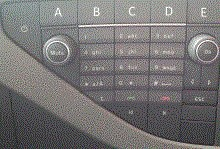

Control panel, test
This function is used to check the control panel buttons.
Note:
Due to various equipments of the control panel, some buttons are termed with large letters instead of what they are labeled with. See picture below.

Test conditions:
Battery voltage above 20 V.
Parking brake applied.
Ignition on, engine off.
Procedure:
Start the function.
Push a button for at least 1 second and check that the status of the button is correct.
Press "OK" to finish.
The function is done.
If the function fails, check the test conditions and try again.